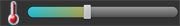

Particle Play is an open sandbox game that allows you to draw various particles of sand, water, stone, fire, etc., and watch them react on the screen with gravity, temperature, and each other.
The Toolbox

The Toolbox is a sliding drawer at the bottom of your sandbox. Here you will find all tools available to you for playing in the sandbox. You can open the toolbox by clicking on the blue toolbox bar at the bottom of your screen, or by sliding it up.
Set Particle & Brush Size
Click on the particle icon in your toolbox to choose your particle. Adjust the slider next to the icon to indicate your desired brush size.
Set Ambient Temperature

Adjust the temperature slider to set the overall ambient temperature in your sandbox. Doing so will cause different reactions with the particles. For example freezing temperatures will cause water to freeze and lava to cool rapidly. Scorching temperatures will cause gunpowder to explode, plants to combust, and water will turn to steam.
Erase Particles
You can toggle the eraser tool on/off by clicking on the eraser button. Simply touch and drag in your sandbox to erase any particles in the way.
Pause/Resume Gameplay
At any time you can pause gameplay by clicking the pause button. You can resume gameplay by clicking the play button.
Accelerometer Gravity
You can toggle using the Accelerometer for gravity. This allows you to rotate your phone to decide which direction your particles will fall.
Exit the Sandbox
To exit the sandbox, simply click the exit button.
Menu
Pressing the Menu button displays the following options
- Save Game
- Load Game
- Clear Level
- Preferences
Save Game
At any time you can save your sandbox in its current state by clicking the save button.
Load Game
Load any of your previously saved sandbox states by clicking the load button, then click on the name of the save state you wish to load.
Clear Level
Clear the entire sandbox of all particles.
Preferences
Various in-game preferences.